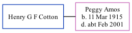

Henry Cotton, the husband of Peggy Rosina Amos (the second cousin once-removed on the father's side of Nigel Horne), and married Peggy in Dover, Kent, England around May 19401.
Citations
England & Wales Marriages 1837-2005 - Findmypast
Family Tree

Generated by ged2site. Last updated on Nov 13, 2024